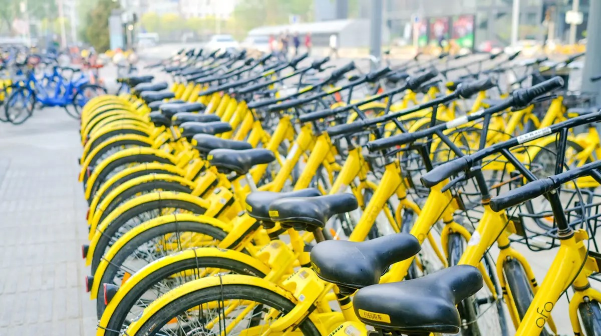

Cyclistic Case Study
Cyclistic, a bike-share company in Chicago. The director of marketing believes the company’s future success depends on maximizing the number of annual memberships. Therefore, we must find and understand how casual riders and annual members use Cyclistic bikes differently. From these insights, I have design a new marketing strategy to convert casual riders into annual members.